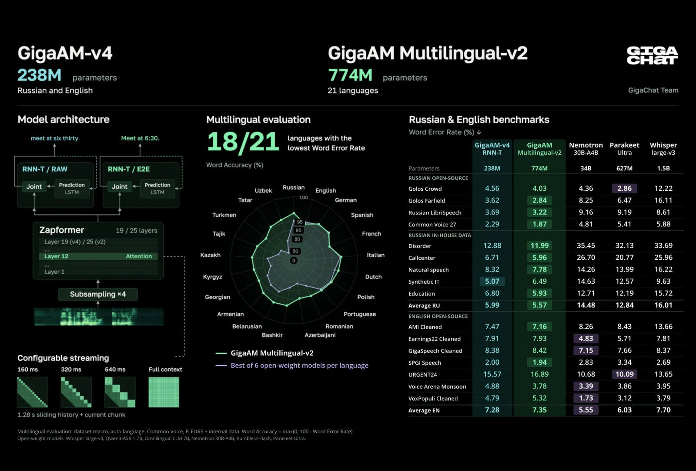

GigaAM-v4 — потоковая модель на архитектуре Zapformer (головки RNN-T и CTC), 238 млн параметров. Учителями выступили аудиоэнкодеры GigaChat3.5 Omni и OmniASR LLM 1B. Обучена на 7 млн часов без разметки и 58 000 часов с разметкой.
GigaAM Multilingual-v2 — 776 млн параметров, 21 язык: русский, английский, казахский, кыргызский, узбекский, белорусский, французский, испанский, башкирский, грузинский, армянский, румынский, туркменский, азербайджанский, таджикский, немецкий, итальянский, нидерландский, польский, португальский, татарский. Претрейн — 10 млн часов, с разметкой — 155 000 часов.
Средняя доля ошибок на русских тестах (WER, ниже лучше):
На английском результаты сопоставимые: 7,28 у GigaAM-v4 против 7,70 у Whisper large-v3 (среднее по публичному срезу Open ASR).
По 21 языку в среднем: GigaAM Multilingual-v2 — 3,96, у ближайшего открытого конкурента (Omni LLM 7B v2) — 14,10: разница больше чем более чем в три с половиной раза, а по отдельным языкам СНГ — почти в пять (азербайджанский 5,31 против 24,85; башкирский 2,74 против 12,83; грузинский 4,52 против 10,34; армянский 3,06 против 7,97).
Пунктуация: F1 восстановления знаков препинания 88,38% против 65,42% у Whisper large-v3 — лучшая на 16 языках из 21.
Модели обрабатывают звук фрагментами по 160, 320 или 640 миллисекунд — скорость появления текста настраивается. Multilingual-v2 выдаёт текст прямо во время разговора. Язык можно задать заранее или доверить выбор модели, а при переключении между языками можно подсказать сразу два (например, русский и английский) — авторы публикуют и метрики code-switching.
Обе модели открыты под лицензией MIT: веса на Hugging Face (ai-sage/GigaAM-v4 и ai-sage/GigaAM-Multilingual-v2), код на GitHub (salute-developers/GigaAM). Потестировать языки и посмотреть сравнение с конкурентами можно в интерактивном демо на giga.chat.